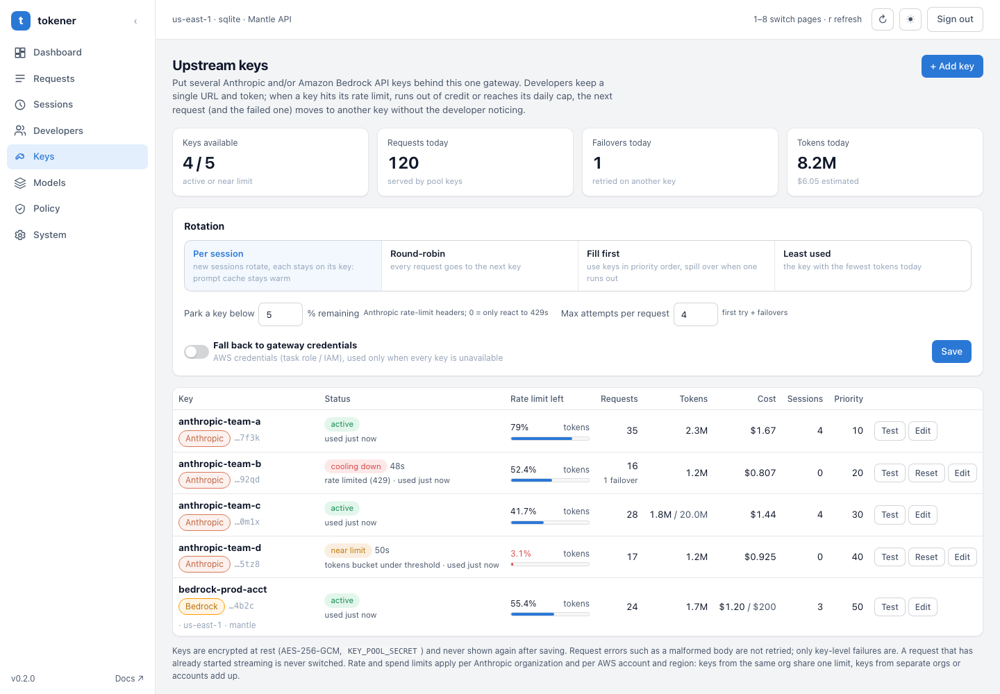
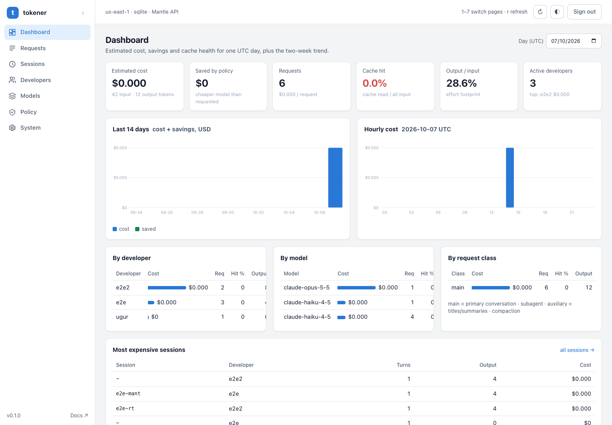

Open source · MIT · v0.2.0 · new: key pool with automatic failover
One endpoint. Many keys. No more rate-limit walls.
tokener is a drop-in gateway for Claude Code. Put API keys from five Anthropic organizations or AWS accounts behind it and your team gets roughly five times the headroom. When one key hits its limit, the next one takes over before the developer notices. It also measures and cuts what every token costs. Developers install nothing: they get a URL and a personal token.
Stop raising limits. Add keys instead.
One API key means one rate limit and one spend cap for the whole team. On a busy afternoon everyone hits the same wall at the same time. tokener spreads the load over every key you give it and switches keys without anyone noticing.
Rotation that keeps the cache warm
New Claude Code sessions are spread across keys, and each session stays on its key, so the prompt cache keeps working. Round-robin, fill-first and least-used strategies are also available.
Transparent failover
A 429, 529, 5xx, rejected key or "credit balance too low" answer puts the key on cooldown, and the same request is retried on the next key. Claude Code just gets its answer.
Switches before the wall
tokener reads Anthropic's rate-limit headers. When a key drops below 5% of any limit, new work moves to another key before the first 429 arrives.
Anthropic and Bedrock, mixed
Combine sk-ant-… keys and Bedrock API keys in one pool. Limits apply per Anthropic organization and per AWS account and region, so keys from separate orgs and accounts each add their own quota.
Per-key caps and analytics
Give any key a daily token or USD cap. See requests, tokens, cost, failovers, live sessions and remaining rate limit for every key.
Keys stay secret
Secrets are encrypted at rest with AES-256-GCM, tested with a free count_tokens call when added, and never shown again. Developers never see them.

Why tokener
In its agent loop, Claude Code resends the whole conversation on every turn. A 10-person team can easily spend $2,000–3,000 a month on tokens, and nobody can see who spent it on what.
Visibility
Every request is logged by developer, session, model and request class. See cost, cache hit rate and the most expensive sessions.
Policy
Deterministic rewrites route subagent and background traffic to cheaper models, fill in a default effort and trim oversized tool output.
Control
Daily USD budgets and token limits per developer. Warn at 80%, then warn, downgrade to a cheaper model, or block.
See where every token goes
A built-in admin console with estimated cost, policy savings, cache hit rate and a 14-day trend, broken down by developer, model and request class.

Two lines in settings.json. Every key you own behind them.
Run it locally against your own AWS credentials today, then deploy to your AWS account with one CDK command.